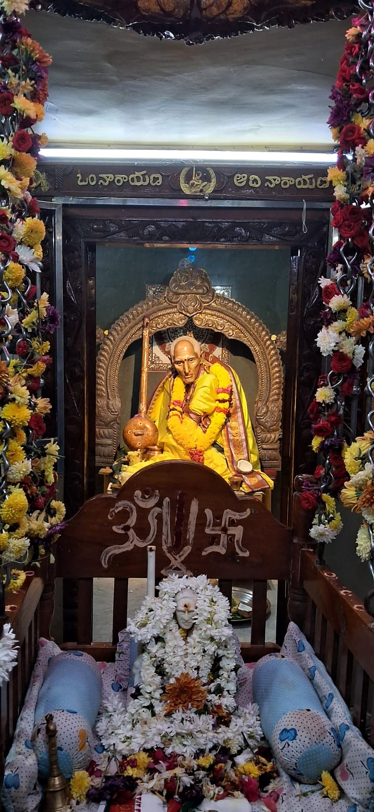

Teachingsబోధనలు
Swamy did not write books or give long discourses. His teaching came through a few plain sentences, repeated to whoever came to him, and through the way he lived. These are the sayings devotees have preserved. స్వామి గ్రంథాలు రాయలేదు, పెద్ద ప్రవచనాలు చేయలేదు. ఆయన బోధన కొన్ని సరళమైన వాక్యాల ద్వారా, వచ్చిన ప్రతి ఒక్కరికీ చెప్పిన మాటల ద్వారా, ఆయన జీవించిన తీరు ద్వారా వచ్చింది. భక్తులు భద్రపరచుకున్న ఆ సూక్తులు ఇవి.
The mantraమంత్రం
Om Narayana Adi Narayanaఓం నారాయణ ఆది నారాయణ

This was the name Swamy gave his devotees to remember. He asked for no elaborate ritual, only that God be remembered constantly and with complete faith. భక్తులు స్మరించడానికి స్వామి ఇచ్చిన నామం ఇది. ఆయన పెద్ద పూజా విధానాలు కోరలేదు; నిరంతరం, పూర్తి విశ్వాసంతో భగవంతుని స్మరించమని మాత్రమే చెప్పారు.
Sayingsసూక్తులు
Equality and love for all will enable you to realize God. అందరిపట్ల సమానత్వం, ప్రేమ ఉంటే భగవంతుని పొందగలవు.
It is great if a householder sticks to dharma. గృహస్థుడు ధర్మాన్ని వదలకుండా ఉంటే అదే గొప్ప.
Watch and learn from the good around you. నీ చుట్టూ ఉన్న మంచిని చూసి నేర్చుకో.
What Swamy lived byస్వామి జీవన సూత్రాలు
Equalityసమానత్వం
Swamy received everyone alike. The landlord and the labourer, the Brahmin and the outcaste, the Hindu, the Muslim and the Christian sat together in his presence. He taught that God is not found by those who divide people. స్వామి అందరినీ ఒకేలా చూసేవారు. భూస్వామి, కూలీ, బ్రాహ్మణుడు, అస్పృశ్యుడు, హిందువు, ముస్లిం, క్రైస్తవుడు అందరూ ఆయన సన్నిధిలో కలిసి కూర్చునేవారు. మనుషులను విభజించేవారికి భగవంతుడు దొరకడని ఆయన బోధించారు.
Dharma in daily lifeనిత్య జీవితంలో ధర్మం
He did not ask householders to renounce the world. He asked them to do their duty honestly, care for their families, and keep their word. A life of dharma at home, he said, is itself a great sadhana. గృహస్థులను ప్రపంచాన్ని విడిచిపెట్టమని ఆయన కోరలేదు. తమ కర్తవ్యాన్ని నిజాయితీగా చేయమని, కుటుంబాన్ని చూసుకోమని, మాట నిలబెట్టుకోమని కోరారు. ఇంట్లో ధర్మంగా జీవించడమే గొప్ప సాధన అని చెప్పారు.
Simplicity and serviceసరళత, సేవ
Swamy owned nothing and needed nothing. Food that came to him was shared with all who were present. Annadanam, feeding everyone who comes, remains the central seva at every temple in his name. స్వామికి ఏమీ సొంతం లేదు, ఏమీ అవసరం లేదు. ఆయనకు వచ్చిన ఆహారం అక్కడున్న అందరితో పంచుకునేవారు. వచ్చిన ప్రతి ఒక్కరికీ భోజనం పెట్టే అన్నదానం నేటికీ ఆయన పేరున ఉన్న ప్రతి ఆలయంలో ప్రధాన సేవగా కొనసాగుతోంది.
TODO: add more sayings or stories from devotees here, in both languages.